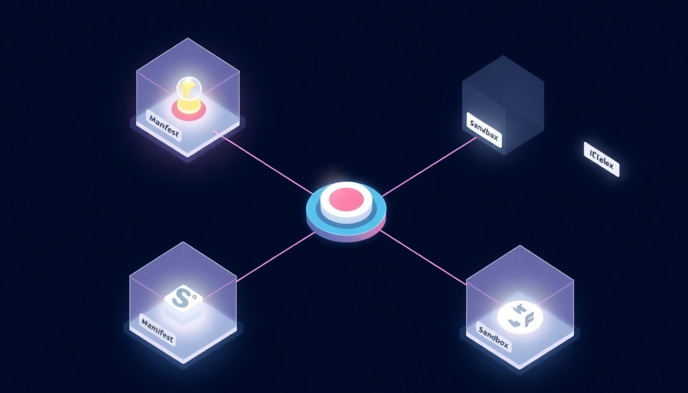

A capability-based reference runtime for agentic AI skill ecosystems. Composes five existing security primitives into a single host with six properties. Demonstrates that documented supply-chain vulnerability classes can be blocked by construction.

Agentic AI skills, composable instruction and code bundles loaded on demand by LLM-powered assistants, are becoming a new software supply chain. Three concurrent SoKs in early 2026123 map the threat landscape. What is missing is a buildable defense.
SCFS (Supply-Chain-Free Skills) is a capability-based reference runtime that integrates five existing security primitives into a single host with six security properties (P1 to P6): WASM-based isolation, capability tokens with per-invocation scoping, sigstore-style signed instruction attestation, Fides-style information-flow control4, and SLSA reproducible-build manifests5. The contribution is integration: a working composition of primitives that have not been combined this way before, packaged so other platforms can adopt or shim against the same contract.
We exercise the runtime against three documented supply-chain vulnerability classes from the surveyed literature, instantiated in current agentic-skill platforms, and show each is refused by construction. The intent is to demonstrate the runtime, not to introduce new attack primitives.
A March 2026 incident captured the threat shape cleanly. The threat actor TeamPCP first compromised Trivy, the open-source SCA scanner used in LiteLLM's CI pipeline; from there they harvested the maintainer's PyPI credentials and published two backdoored versions (1.82.7 and 1.82.8) through the normal release channel. PyPI quarantined within roughly 40 minutes, but the payload ran a three-stage attack on every consumer machine: harvest credentials (SSH keys, cloud tokens, Kubernetes secrets, crypto wallets, .env files), attempt lateral movement across Kubernetes clusters via privileged pod deployment, and install a persistent systemd backdoor6.
In late 2025, CVE-2025-68664 ("LangGrinch") in langchain-core turned prompt injection into secret theft via a serialization gadget, CVSS 9.3 against a library with 847M downloads7. A separate operation, ClawHavoc, planted roughly 1,200 malicious skills in a major agent marketplace; they exfiltrated API keys, cryptocurrency wallets, and browser credentials at scale before takedown8.
The pattern is structurally different from npm or PyPI. In a traditional package supply chain you ship code; in an agentic skill ecosystem you ship instructions. The invocation contract is natural language. That makes semantic poisoning - instructions that look benign to reviewers but redirect a privileged LLM's actions at runtime - a first-class threat with no analogue in earlier ecosystems.
Primary contribution. ~2k Rust LoC integrating Wasmtime + sigstore + Fides + capability tokens + SLSA manifests into one host. 19 tests pass.
P1 declared capability surface, P2 signed instruction attestation, P3 transient capability tokens, P4 reproducible builds, P5 default-deny cross-skill flow, P6 update-gating. Each property maps to one existing primitive.
Three reproducible demonstrations of supply-chain vulnerability classes documented in prior work (typo-squat, post-install update, cross-skill composition), exercised in current agentic-skill platforms. Not new attack primitives.
Manifest JSON Schema, instruction front-matter schema, CTS OpenAPI. Permissive license. Designed so other skill platforms can adopt the same contract or shim against it.
A working five-axis structuring of the threat surface used to map each documented vulnerability class to the SCFS property that blocks it. Pedagogical, not a novel taxonomy claim.
Three concurrent SoKs (P020 Maloyan, P033 Xu, P034 Jiang) map the threat landscape. SCFS does not duplicate that mapping. It ships the buildable defense those papers point toward.
The surveyed literature uses several overlapping taxonomies. To map each documented vulnerability class to the SCFS property that refuses it, we separate two often-conflated dimensions (injection point and payload) and use five axes for clarity. This is a presentation device, not a novel taxonomy:
The host runtime mediates every step from registry to LLM planner. Five components, six properties.
Every syscall the skill can make is declared in skill.manifest.yaml and enforced by the Wasmtime host. Undeclared calls are refused at the sandbox boundary.
Sigstore signature keyed to the author's GitHub OIDC identity. Instruction body and code WASM both signed; integrity end-to-end.
JWT EdDSA tokens, ≤60s TTL, single-invocation, audience-bound to a concrete tool URI. No long-lived token held by a skill.
SLSA Build L2+ provenance attestation. Verifiable hand-back from compiled WASM to a specific commit + workflow + builder identity.
Fides-style IFC. Skill A's output cannot reach skill B without B's manifest explicitly declassifying A in inter_skill.declass_from.
Any additive capability delta on update forces user re-consent. Author identity change is refused outright. Tokens for the prior version are revoked.
These are documented classes from the surveyed literature (typo-squat from package-ecosystem lit, post-install update from browser-extension lit, cross-skill indirect prompt injection from Greshake / InjecAgent / Worms-paper). We exercise each against current agentic-skill platforms and against SCFS. The attack classes are not novel; the value is showing that SCFS refuses them by construction. Concrete reproduction steps stay private until coordinated-disclosure with Anthropic clears.
An adversary publishes a near-name clone of a popular skill. The clone's declared behaviour is benign; at runtime it exfiltrates via a tool-use side channel.
Blocked by P1 + P2. Sigstore identity is keyed to the legitimate author's GitHub login. The typo-squat is signed by a different identity (or unsigned). SCFS refuses the install before any consent screen is shown. Even if signed and accepted, an undeclared network capability is denied by the sandbox at runtime.
Adversary genuinely owns the publishing identity. Ships a benign v1, waits for the trust window to open, pushes a malicious v2 that requests new capabilities. Every reviewed platform applies the update silently.
Blocked by P6. The Update Gate diffs the capability surface on every incoming version. Any non-empty additive delta forces re-consent; existing capability tokens are revoked. auto_apply: true is only honoured when the diff is empty and the policy hash is unchanged.
Two skills are individually safe - one reads documents, another sends to a webhook. Composed by a user prompt, the output of A becomes input to B. An attacker-planted instruction inside A's source data redirects B to a destination A's manifest never declared.
Blocked by P5. Fides-style IFC tags skill A's output with {conf: {A}, integ: {A}}. Skill B cannot ingest A's output without explicit declass_from: ["A"] in its manifest. The default-deny gate refuses the cross-skill forward and the planner cannot route around it.
~2k LoC Rust across five crates. Compositional design: each property is satisfied by exactly one component, and each component wraps one existing primitive.
shared types · taint lattice · JWT claims
schema validation · sigstore subset · capability delta
capability token service · issue / verify / revoke / audit
Wasmtime sandbox · Fides IFC · Update Gate
scfs install entry point
cargo check --workspace --tests → 0 errors
cargo test --workspace → 19 passed · 0 failedschema_version: scfs/v0.1
skill:
id: ai.example.summariser
version: 0.1.0
author:
github_login: example-author # OD1 - GitHub OIDC only in v0.1
capabilities:
filesystem:
- { op: read, scope: "${cwd}/*.txt", recursive: false }
network: [] # default-deny
inter_skill:
declass_from: [] # P5 - no inbound cross-skill flow
publish: { confidentiality: user, integrity: self }
update_policy:
auto_apply: false # P6 - re-consent on any cap delta
attestation:
slsa_level: 2 # P4 - Build L2 minimum
reproducible_build: trueAll three PoCs are author-owned synthetic infrastructure. No production user, third-party MCP server, or registry was targeted at any point. The exfiltration sinks log only synthetic dummy credentials.
A heads-up notice is sent to security@anthropic.com the day PoC-A becomes reproducible end-to-end, opening a 90-day embargo before any public attack-code release. The reference implementation is private until that clock expires. This site abstracts away concrete attack details until then.
AI-tool disclosure: this site, the manuscript drafts, and the reference implementation were authored with Claude Code as a drafting assistant. The author retains full responsibility for design decisions, claims, and the integrity of the security argument.
While the preprint is in preparation:
@misc{pestana2026scfs,
author = {Pestana, Camilo},
title = {SCFS: Supply-Chain-Free Skills, a Capability-Based
Reference Runtime for Agentic AI Skill Ecosystems},
year = {2026},
howpublished = {arXiv preprint and open-source reference implementation},
note = {In preparation. SaTML 2027 short paper under review.},
url = {https://github.com/elcronos/scfs}
}Until the preprint lands: Pestana, C. (2026). Supply-Chain-Free Skills. Working draft.
1.82.7 + 1.82.8 backdoored via prior Trivy compromise. github.com/BerriAI/litellm/issues/24518 · litellm advisory · Datadog Security Labs · Snyk.